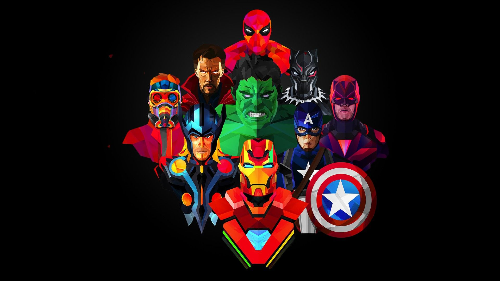
Crisis: Migrantes, Desplazados y Refugiados
"No siempre se gana. Pero hoy podemos asegurarnos de que sobrevivan." — el principio detrás de cada operación humanitaria.
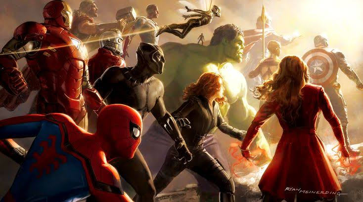

Reunir al equipo para enfrentar una amenaza global: la desigualdad. Migraciones forzadas, crisis humanitarias, delincuencia organizada y violencia estructural exigen entender el origen del problema antes de poder vengarlo.
"Algunos prefieren creer que las cosas están mejor de lo que pensamos." — Tony Stark, sobre el optimismo que no le cree nadie.

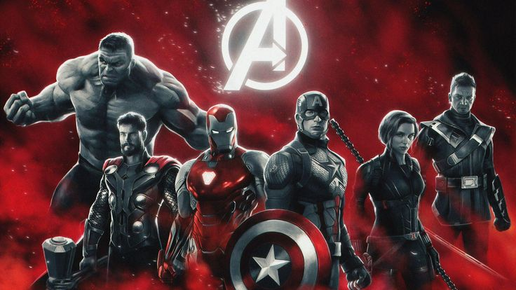
"No siempre se gana. Pero hoy podemos asegurarnos de que sobrevivan." — el principio detrás de cada operación humanitaria.

"Las amenazas más peligrosas no siempre llegan con un ejército." — la lección que Hydra le enseñó a S.H.I.E.L.D.
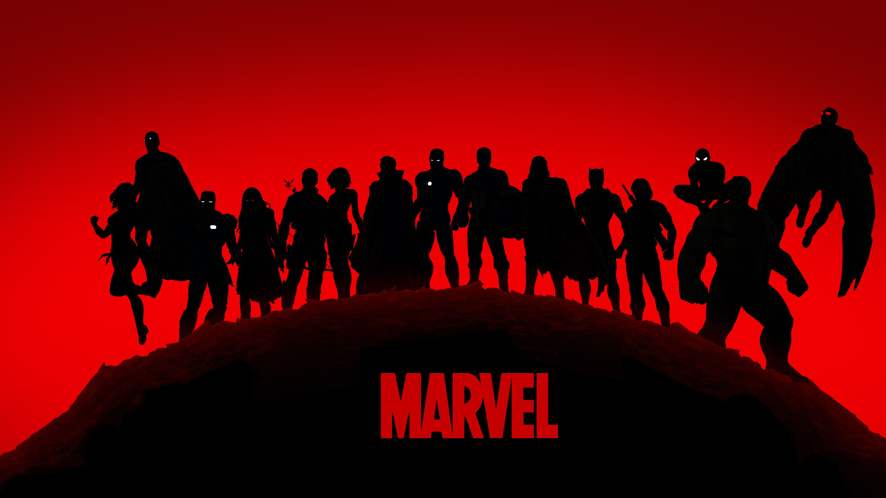
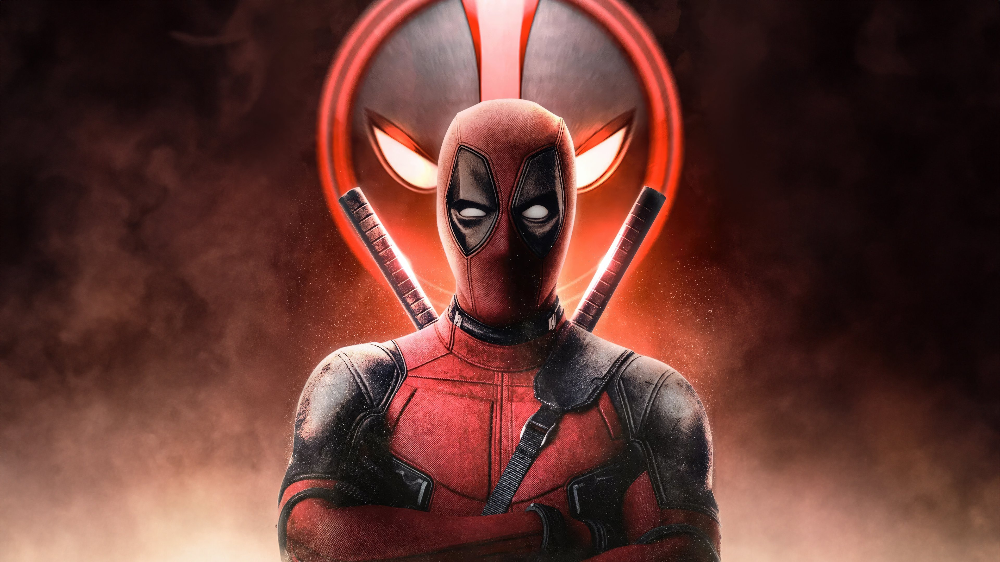
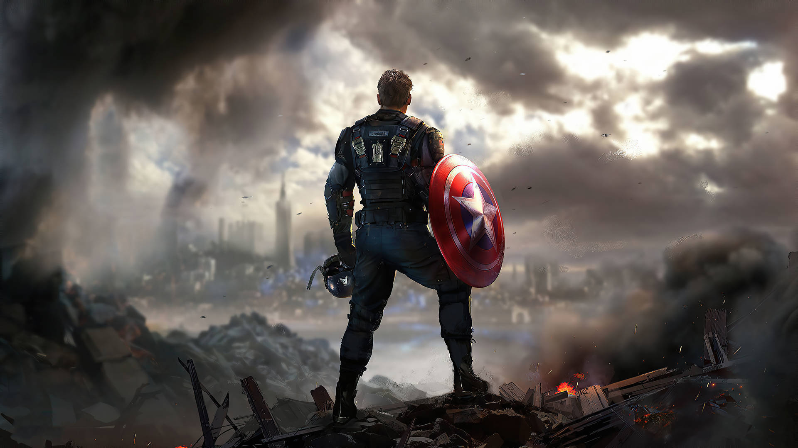
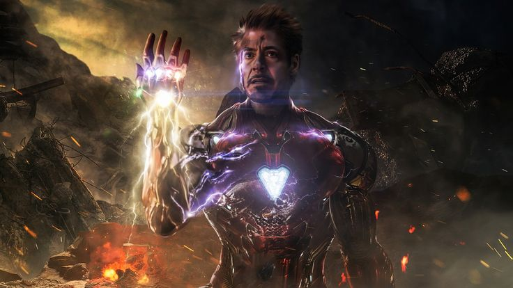
"Cada vez que alguien intenta resolver un problema con violencia, crea cinco más." — Natasha Romanoff, casi citando estadísticas reales.
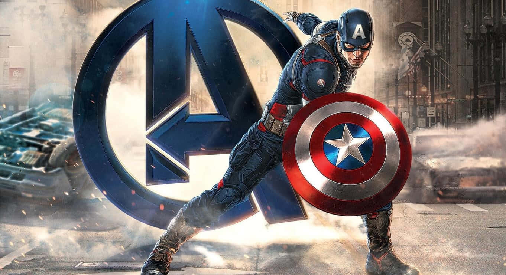
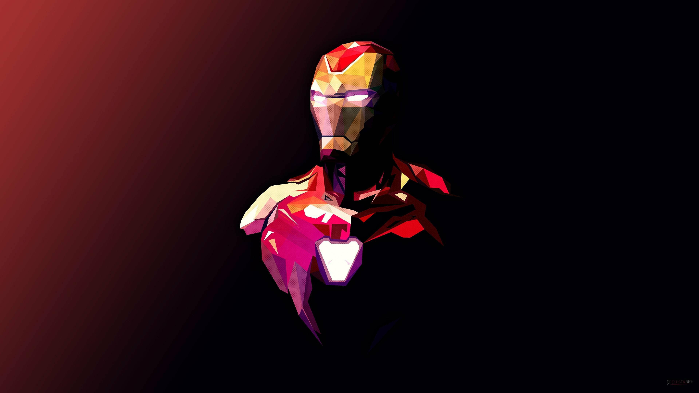
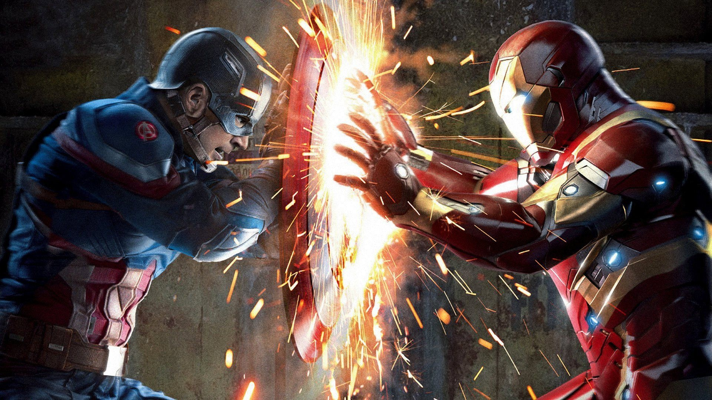
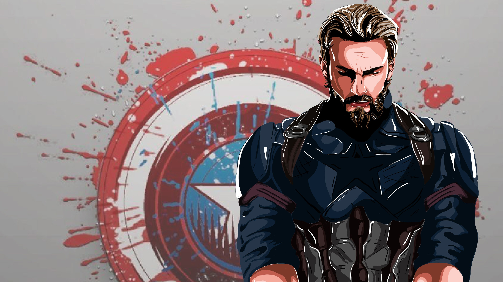